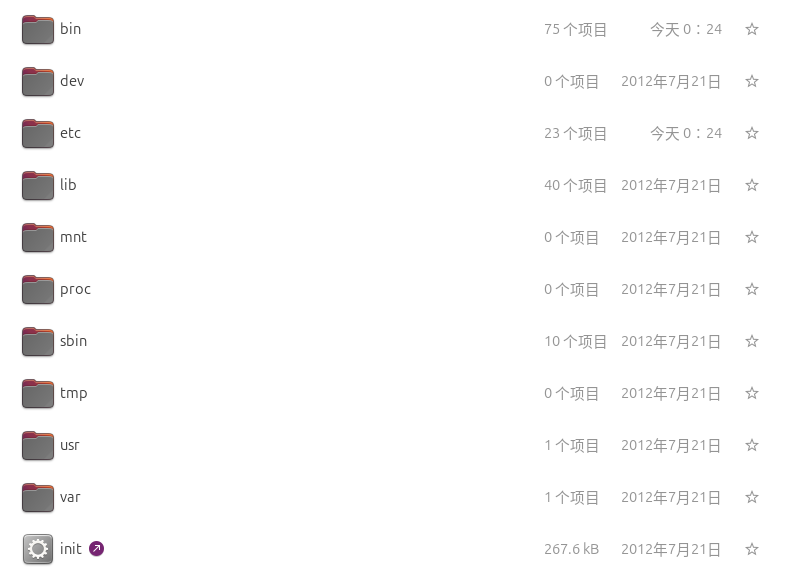
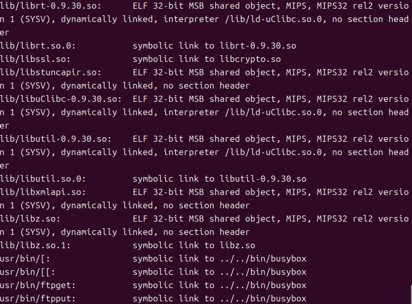
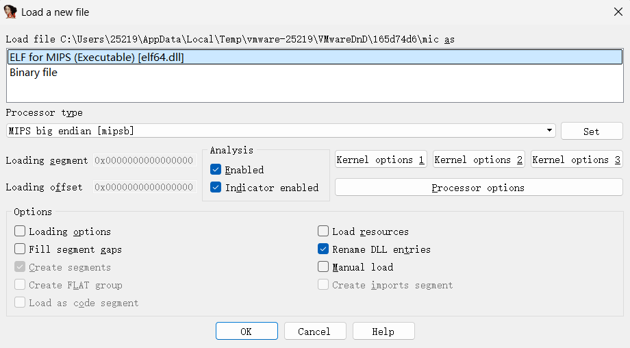
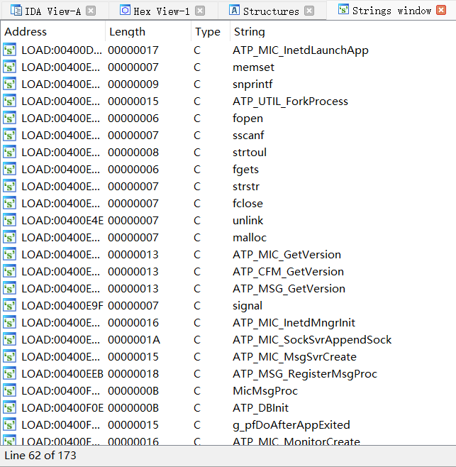

前言
想学IoT安全，但前置知识过于庞杂，现有的教程往往默认读者有固件分析和逆向基础。我的基础并不好，几乎看不懂文章，不知道每一步在做什么，而系统补基础容易变成空中楼阁且劝退，因此陷入了两难的境地
这篇文章不分析漏洞，主要用于熟悉IoT安全的基本流程、环境搭建、固件解包与逆向分析
环境搭建
固件获取
首先是通过漏洞编号确认路由器型号与固件版本，比如这篇文章的华为HG532 CVE-2017-17215 固件，得到一个二进制文件HG532eV100R001C01B020_upgrade_packet.bin，这就是整个设备的软件镜像
主要工具
固件分析用到的各种工具更适合Linux环境，因此我使用Ubuntu 24.04.4作为宿主机
binwalk：用于解包和分析固件，需要配套工具sasquatch
|
|
ida：对 ELF 程序进行静态分析qemu：路由器固件一般是一套嵌入式 Linux 系统，适配路由器主机，无法在ubuntu下直接运行。为了让程序真正跑起来，需要用到QEMU。它模拟了固件运行所需的真实设备环境，翻译不同架构的指令
|
|
固件分析
固件解包
使用binwalk进行解包，也就是从固件的二进制文件中提取出文件系统。解包后的文件系统在squashfs-root/目录下
这个命令的意思是binwalk会扫描文件里的特征，找到文件系统后递归扫描里面的内容
-
-e：尝试提取 -
-M： 提取后继续递归扫描里面的内容
|
|
文件分类
进入 squashfs-root 后，可以看到类似普通 Linux 系统的目录结构。bin 和 sbin 中是可执行程序，etc 中是配置文件，lib 中是动态链接库

注意到vscode只能打开etc中的文件，可执行文件打开会乱码。这是因为它只能打开文本类文件，可执行文件是编译后的机器指令
使用下面的命令批量判断这些目录里每个文件的类型
|
|

这里筛选几个有代表性的输出：
|
|
这是一个 ELF 可执行程序
ELF：Linux 下常见的二进制文件格式32-bit：这是 32 位程序MSB：大端序，也就是高位字节放在前面MIPS：这个程序的架构是 MIPSMIPS32 rel2：MIPS 指令集版本dynamically linked：程序运行时需要依赖动态库interpreter /lib/ld-uClibc.so.0：程序启动时需要通过这个动态链接器加载运行no section header：文件中没有 section header，很多固件程序会被精简掉这部分信息
|
|
这种文件是指向 BusyBox 的符号链接。它们并不是实现命令的二进制程序，真正的程序是 busybox。因此无需分析这类文件，分析 busybox 即可
嵌入式设备为了节省存储空间，经常用一个 BusyBox 实现很多常用命令。系统调用 ls 时，实际运行的是 BusyBox，只是 BusyBox 会根据自己被调用时的名字执行对应功能
|
|
init 和系统启动流程有关，也指向 BusyBox
|
|
这是 shell 脚本，是文本文件，可以直接打开阅读。ASCII text executable 表示它是文本且可执行。脚本能直接看出某些启动命令或配置逻辑，可以优先分析这类文件
|
|
指向 /dev/null，也就是 Linux 里的空设备。写入的东西会被丢弃，也读不出来正常内容。所以这是占位或被废弃的命令，可以忽略
|
|
这些是普通文本文件，可以直接打开阅读。一般是重要的配置类文件
|
|
证书和私钥相关文件
PEM certificate：PEM 格式证书PEM RSA private key：PEM 格式 RSA 私钥
|
|
这是普通目录，需要继续进入目录内部扫描文件
|
|
这是动态链接器相关文件。前面很多 ELF 程序里都有 interpreter /lib/ld-uClibc.so.0，说明这些程序运行时会通过这个路径找到动态链接器
ld-uClibc.so.0：程序要找的动态链接器路径ld-uClibc-0.9.30.so：实际存在的具体版本文件symbolic link：把通用名字指向具体版本
|
|
这是动态库，是供其他程序调用的库文件。固件中的程序运行时会依赖这些 .so 文件
shared object：共享库文件MIPS：库文件的架构是 MIPSdynamically linked：它本身也可能依赖其他库no section header：文件中没有 section header
启动流程
这个固件里 /sbin/init 指向 BusyBox，BusyBox 的 init 会读取 /etc/inittab 作为启动配置。所以观察启动流程首先看 etc/inittab
|
|
-
::sysinit:/etc/init.d/rcS：init启动后，会在初始化阶段执行/etc/init.d/rcS -
::respawn:-/bin/sh：反复拉起一个 shell。-表示让 shell 按 login shell 方式启动， login shell 会读取/etc/profile、~/.profile这类配置 -
# tty2::askfirst:-/bin/sh：控制台登录。这行被注释了，不会执行 -
#::ctrlaltdel:/bin/umount -a -r：响应 Ctrl+Alt+Del 这类重启动作，/bin/umount -a -r是卸载文件系统。这行被注释了，不会执行
这里主要需要查看两个文件：
etc/init.d/rcS和/etc/profile
etc/init.d/rcS只打印信息和设置 PATH，没有继续启动其他服务。这条线断掉了
|
|
/etc/profile才是真正的目标，摘取其中重要的命令如下
|
|
初步分析刚刚筛选出来和启动相关的程序：
bin/swapdev：环境准备的脚本，创建设备节点
bin/startbsp：环境初始化的脚本，挂载目录
bin/atserver：没有找到对应文件，可能是残留逻辑
bin/usbdiagd：没有找到对应文件，可能是残留逻辑
bin/atmcmdd：后台启动的 ELF 程序，常驻运行
bin/tcwdog：后台启动的 ELF 程序，和看门狗相关。这里真正被启动的是 tcwdog，/dev/watchdog 是传给它的设备节点参数
bin/mic：最后执行的ELF程序，没有&说明 profile 执行到这里后， 它可能会接管后续流程
逆向分析
真正有分析价值的是mic和atmcmdd，这里先分析mic
用ida打开，首先确认识别的文件类型与架构和之前file命令输出的一致，其他保持默认即可

Shift + F12打开 Strings 窗口，这个窗口会把程序里能识别出来的可读字符串列出来，主要看最后一列即可

参考
Huawei Home Routers in Botnet Recruitment - Check Point Research
CVE-2017-17215-HG532命令注入漏洞分析-先知社区